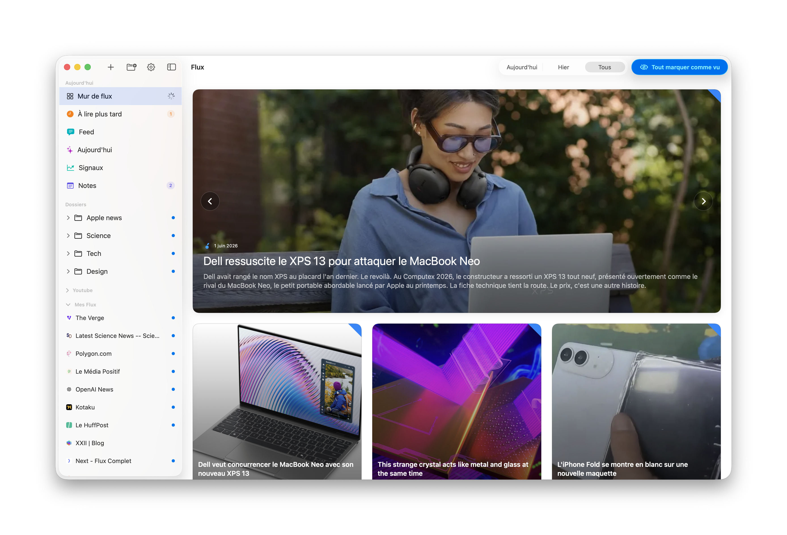
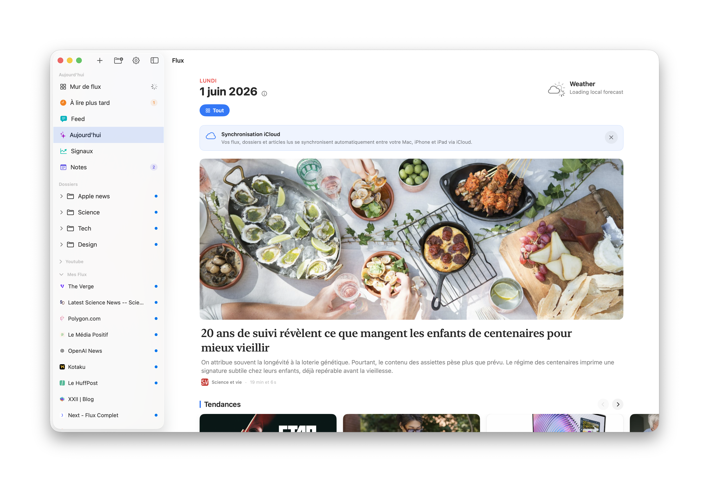
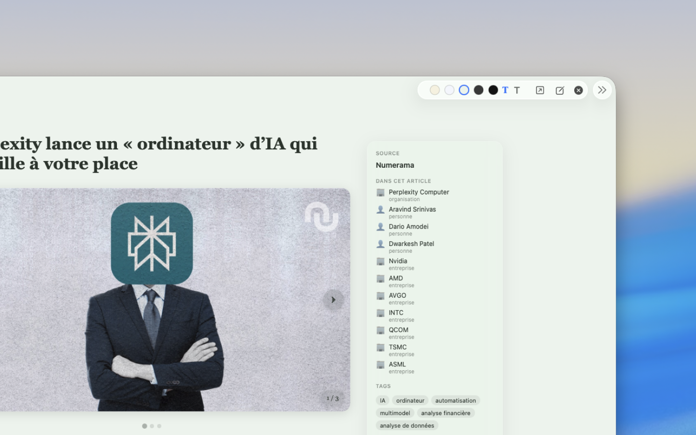
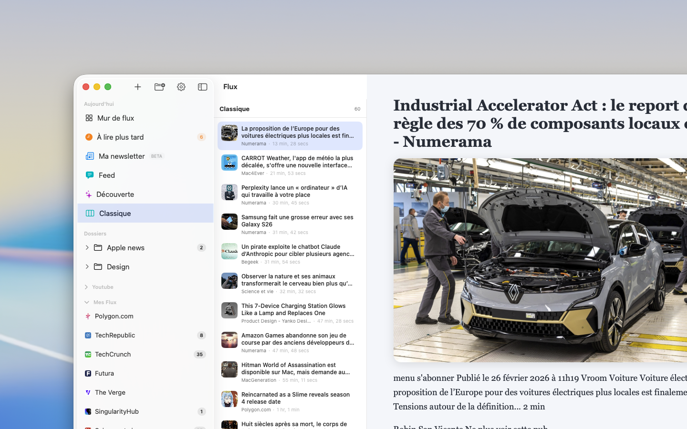

Le calme retrouvé dans tout ce que vous lisez.
Flux réunit vos sources RSS, blogs, newsletters et chaînes YouTube dans une seule app native.

Toutes vos sources
Un mur de flux, pas une timeline.
Ajoutez un site, un flux ou une chaîne. Flux range tout dans un espace lisible.
Détection automatique des flux quand un site la permet, en un collage d'URL.
Dossiers, favoris, à lire plus tard sans empiler des vues qui ne servent à rien.
Une vraie hiérarchie visuelle, pas une soupe de cartes identiques.
Aujourd'hui
Votre journée, mise au clair.
Chaque matin, Flux compose une vue d'ensemble de vos sources. La mise en forme est assurée localement par les modèles d'Apple.
Le bruit filtré, les doublons et la publicité écartés avant lecture.
Une lecture orchestrée, ordonnée par sujet plutôt que par horodatage.

Signaux
Ce que le monde anticipe, d'un coup d'œil.
Au-delà de vos flux, Signaux agrège les marchés prédictifs — politique, tech, finance, culture, sport.
Tendances en direct, regroupées par thème et mises à jour en continu.
À la une, les événements les plus suivis du moment.
Lecture
Quand vous lisez, l'interface s'efface.
Vue immersive, contexte de l'article à portée, rythme posé. Le texte reste au centre.
Vue immersive pour les articles, sans distraction autour.
Contexte à portée : personnes, entreprises et tags cités dans l'article.

Au quotidien
Une app qui se comporte comme un outil, pas comme une vitrine.
Native sur Mac et iPad, pensée pour durer et pour rester discrète.
100 % natif
Construite avec SwiftUI pour macOS et iPadOS. Rapide, sobre, à sa place sur le système.
iCloud privé
Flux, dossiers et articles lus se synchronisent entre vos appareils via votre iCloud.
Local d'abord
Pas de compte, pas de serveur. Vos lectures vivent sur votre appareil.
Sans pistage
Aucune régie publicitaire, aucun profilage. Vous lisez, c'est tout.
Local d'abord
Vos lectures restent chez vous.
Pas de compte à créer, pas de profil à nourrir. Vos sources et vos articles vivent sur votre appareil et se synchronisent uniquement via votre iCloud privé.

Questions fréquentes
Ce qu'on nous demande le plus souvent.
Sur quels appareils fonctionne Flux ?
Flux est une app native pour Mac et iPad. Vos flux se synchronisent via iCloud.
Que vient faire l'intelligence d'Apple ici ?
Flux s'appuie sur les modèles d'Apple, exécutés localement.
Mes données quittent-elles mon appareil ?
Non. Flux ne demande pas de compte.
Quels formats de sources sont pris en charge ?
RSS, Atom, blogs, newsletters et chaînes YouTube.
Flux est-il gratuit ?
Flux se télécharge sur le Mac App Store.
Commencer